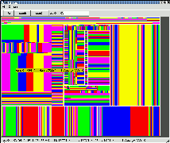
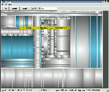
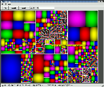

Documentation for QTreeMap
QTreeMap is a Qt/KDE widget written for KDirStat that displays information
about disk/directory usage as a Treemap graphics.
QTreeMap is a library containing a set of C++/Qt classes that provide
an easy-to-use Treemap Widget for the Qt Environment.
Treemaps are a 'new way' of displaying a hierarchy (which elements
can be associated with a size) in a rectangular painting area.
Each node of the hierarchy is drawn as a rectangle, with it's subnodes
drawn recursively into it - the area size of each rectangle is proportional
to the 'size' of the node, so large elements/node have large rectangles,
small elements small rectangles.
QTreeMap is currently used by KDirStat, a disk-usage utility to display
file system hierarchies as Treemaps - you can display your whole /usr/X11R6
tree in a 800x600 area, and all dirs and files are visible, so you can
easily detect at one glance which directories/files use up disk space.
QTreeMap will also be used with KProf to display profiling data as
Treemaps.
QTreeMap is written by Alexander Rawass <alexannika@users.sourceforge.net>
KDirStat is
written by Stefan Hundhammer <sh@suse.de>
the ideas behind the algorithms for squarified Treemaps
have been taken/inspired from the Document stm.pdf,
"Squarified Treemaps" by Mark Bruls, Kees Huizing and Jarke
J. van Wijk
from the SequoiaView Homepage http://www.win.tue.nl/sequoiaview/
Email: {keesh,vanwijk,sequoia}@win.tue.nl
the ideas behind the Cushion Treemaps
have been taken/inspired from the Document ctm.pdf,
"Cushion Treemaps" by Jarke J. van Wijk and Huub van de Wetering
from the SequoiaView Homepage http://www.win.tue.nl/sequoiaview/
Email: {vanwijk,wstahw,sequoia}@win.tue.nl
QTreeMap is currently in heavy development, expect newer versions any
time
Example screenshots:

The left picture shows my /usr/X11R6 tree drawn with shading 'Flat'
in cyclic mode
The middle picture shows /usr/X11R6 with 'Hierarch. Dist Cushion' shading
in monochrome mode,
the blueish rectangles match the regexp "\.so"
The right picture shows /usr/X11R6 drawn with squarified Treemaps in
'Fast Bump' shading.
Usage:
-
move the mouse and a tooltip will show you file name and size
-
doubleclick on a rectangle and you're stepping (one directory) down into
the direction of that file
-
click right mouse button and a popmenu will open, displaying the file name
and size of each subpath
calling konqueror or xterm is broken, no delete yet
-
enter a regexp in the text entry field (in the toolbar), and all files
which match that regexp will be drawn highlighted
enter another regexp to highlight more
enter an empty string (and hit return) and the selection will be cleared
-
you can select/deselect files by clicking on them
those selected files will appear in the popupmenu under 'selection'
when you press the right mouse button
Description of Shadings and Options:
undocumented Shadings/Options are experimental/for debugging purposes and
should be left alone, exept when you want to play around...
-
Shadings (best used with cyclic ColorScheme)
:
-
Flat
draws flat rectangles
-
Image
like Flat, except: when the corresponding file is an image (like a
jpeg or png), the image is loaded and displayed in the rectangle
this is only sensible with squarified Treemaps
-
Sinus
draws a bump/parabola with a sin-Function
-
Sinus 2
modified Version of Sinus
-
fast Bumb
draws a faster bump/parabola with a x^2-Function
-
Cone
draws with help of a linear Function
-
Outline
just draws the outline of the rectangle
-
Hierarchical Shadings (best used with monochrome
ColorScheme)
-
test CTM Cushion
does not work yet
-
hierarch. Sinus Cushion
draws a Cushion, where the center of the bump is moved in the direction
of hierarchies
a sin-Curve is used to make the bump
-
hierarch. Sinus Cushion 2
modified version of hierarch. Sinus Cushion
-
hierarch. Dist. Cushion
draws a Cushion, where the center of the bump is moved in the direction
of hierarchies
a distance-Function is used to draw the bump
-
hierarch. Dist. Cushion 2
modified version of hierarch. Dist. Cushion
-
hierarch. Cushion 5
just testing
-
hierarch. Debug Cushion
just for debugging
-
Wave2 Cushion
just testing
-
Draw Modes:
[to do]
-
Start Direction:
chooses the direction in which the root node is drawn
-
Don't draw if smaller: off, 0-10
-
off
draws every small file, even when it is too small to be seen
-
values 0-10
doesn't draw files which are less than 0-10 pixels wide
drawing gets done a lot faster, but 'empty space' may appear where
lots of small files don't get drawn
-
sensible values are off, 1,2 or 3
-
Hierarch. Cushion Factor: -100% to 100%
-
when using hierarchical shading, the center
of each bump is moved n % to the direction of the center of the parent
bump
-
sensible values are 10 % to 40%, default is 30%
-
Color Scheme:
-
cyclic (default)
uses a set of colors, the colors are cycled
not good to display hierarchies
-
regexp
not yet working
-
monochrome
switches to monochrome shading
when using hierarchical cushion, monochrome
is much better to see the hierarchies than cyclic, because you don't get
confused by all those different colors
-
Draw Text
draws Text into each rectangle
-
squarify Treemaps
the treemaps are drawn with a different algorithm, which tries to lay
out the rectangles so that they don't get thin and flat - the result is
rectangles which have a better aspect
can be quite confusing, the hierarchy is not as good visible as without
ToDo:
Bugs:
-
Cushions a la SequoiaView are not yet working
-
current dirname display not working
-
no checkmarks in option menues
-
hierarch. Factor >=50% is nonsense
-
clicking too often on 'ZoomIn' consumes too much memory -> X swaps till
death
-
warnings about RGB parameters
Planned:
-
moving (drag'n'drop) of files into other directories
-
re-writing QTreeMap to be a general abstract Qt/KDE widget for visualization
of general hierarchies
KDirTreeMap will then be an implementation for this abstract QTreeMap
that displays disk usage
-
writing a FileRequester based on Treemaps
-
'selling' QTreeMap to Konqueror or KDE in general
-
re-writing QTreeMap to GtkTreeMap for use with Gtk/Gnome
-
subclassing/extending QListView to have an TreeMap view in _every_ Application
that uses a QListView to display hierarchies of any sort (file systems,
menu items, bookmark folders)
Ideas for the usage of Treemaps:
-
Disk Usage Display
-
File System Navigation (as a FileRequester or 'graphical' CD)
-
Navigation help in large Bookmark folders
-
Navigation help in large Source Code projects, i.e. in kdevelop
-
Profiling Information Display (for use with gprof output)
-
Content/Information Management
-
Web Traffic Analyzer
-
Display of the structure of an organization
-
Image Browser
Other similar Projects:
-
SequoiaView (from which
I got inspired), sadly, it is not Open Source
*thank you very much* for the inspiration they gave me by writing SequoiaView,
when I first saw SequoiaView, I immediately knew that this was the
Tool I was missing so long,
and that the idea behind Treemap is a genius, while the algorithm is
utterly trivial
I am *fascinated* how great this Treemap idea is and how simple the
implementation is ;-)))
-
Photomesa, an Image-Browser
in Java using Treemaps
-
Documents/Thoughts on Treemaps by Ben
Shneiderman
He seems to be the inventor of Treemaps, I declare him a genius!
*thank you* for this great visualization idea
-
TreeMap java libraries
-
JTreeMap
java treemap component
Alexander Rawass <alexannika@users.sourceforge.net>
Last modification Date: 10 August 2001